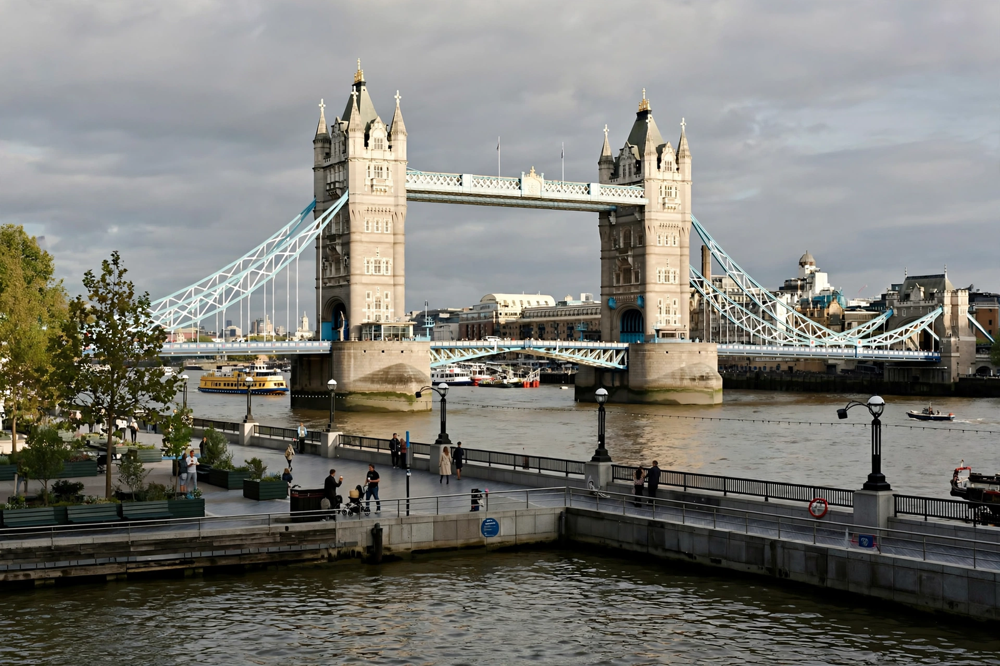

Tower Bridge

| Carries | A100 Tower Bridge Road |
|---|---|
| Crosses | River Thames |
| Locale | London, England |
| Design | Bascule and suspension bridge |
| Total length | 244 m (800 ft) |
| Height | 65 m (213 ft) |
| Construction start | 1886 |
| Opened | June 30, 1894 |
Tower Bridge is a Grade I listed combined bascule and suspension bridge in London, built between 1886 and 1894, designed by Horace Jones and John Wolfe Barry. It crosses the River Thames close to the Tower of London, from which it takes its name, and is one of five London bridges owned and maintained by the City Bridge Foundation.
History
By the late 19th century, commercial development in the East End of London had created demand for a new river crossing downstream of London Bridge, but it could not be a fixed bridge because tall ships needed access to the Port of London. A design competition was held, and the winning entry by City Architect Horace Jones and civil engineer John Wolfe Barry proposed a bascule bridge whose two central spans could pivot upward to let ships pass.
Construction involved more than 400 workers over eight years. The bridge opened on June 30, 1894, by the Prince and Princess of Wales, later King Edward VII and Queen Alexandra.
Design
The bridge is 244 metres (800 ft) long with two towers 65 metres (213 ft) tall, built on piers sunk into the river bed. The steel framework is clad in Cornish granite and Portland stone in a Victorian Gothic style, intended to harmonise with the nearby Tower of London. The central span is split into two equal bascules, each weighing more than 1,000 tons, which can be raised to 86 degrees. The original hydraulic lifting machinery was powered by steam; it was modernised in 1974 with an electro-hydraulic system.
High-level walkways connect the two towers 42 metres above the river. They were designed in part to let pedestrians cross while the bascules were raised, but gained a reputation as haunts of prostitutes and pickpockets and were closed in 1910. They reopened in 1982 as part of the Tower Bridge Exhibition, and a glass floor was installed in 2014.
Today
The bridge is crossed by roughly 40,000 people a day, and the bascules are raised about 800 times a year. It is frequently mistaken for London Bridge, the plainer bridge upstream — a confusion famously attached to the apocryphal story of the 1968 sale of London Bridge to an American buyer.
See also: Brooklyn Bridge.